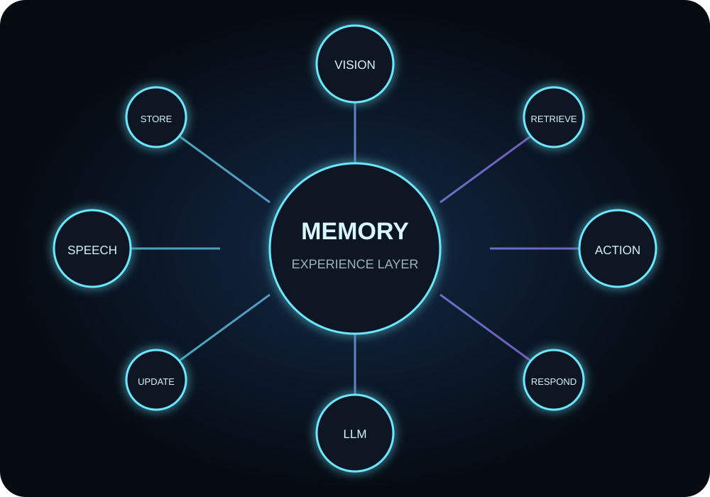
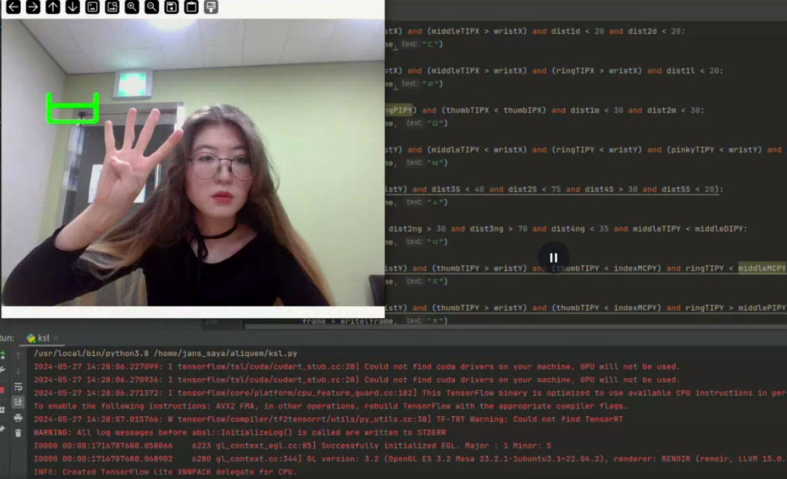
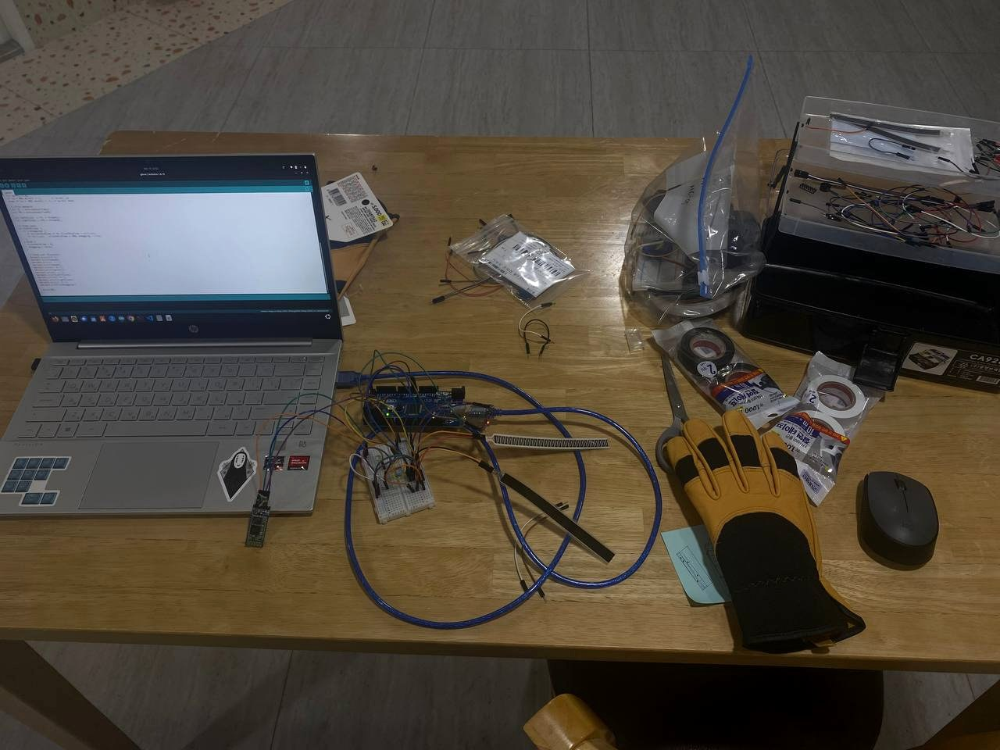
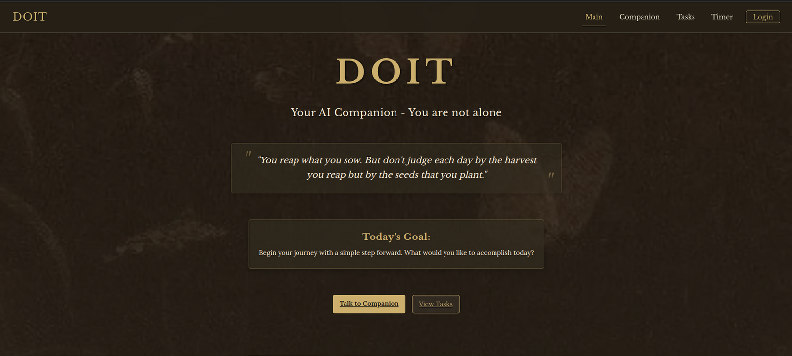
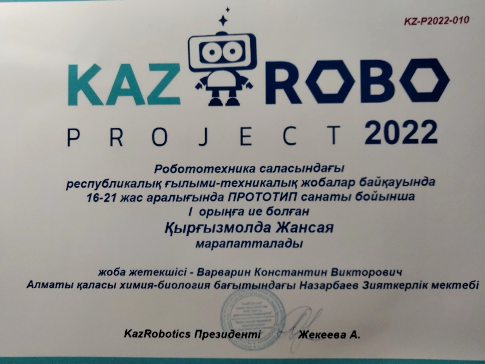
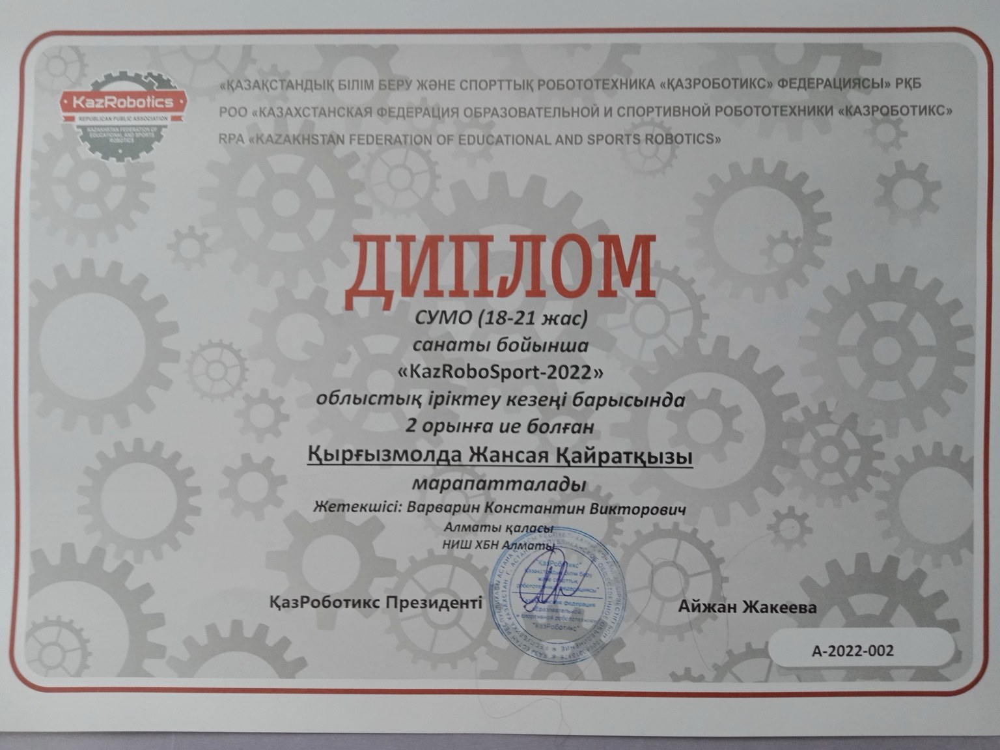
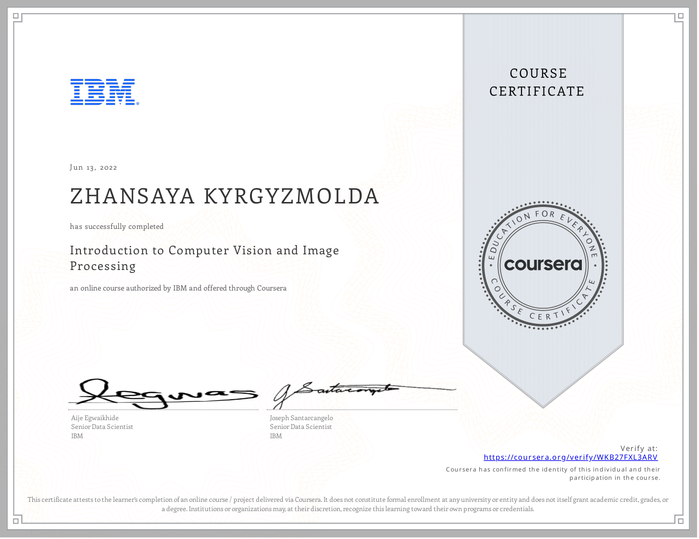
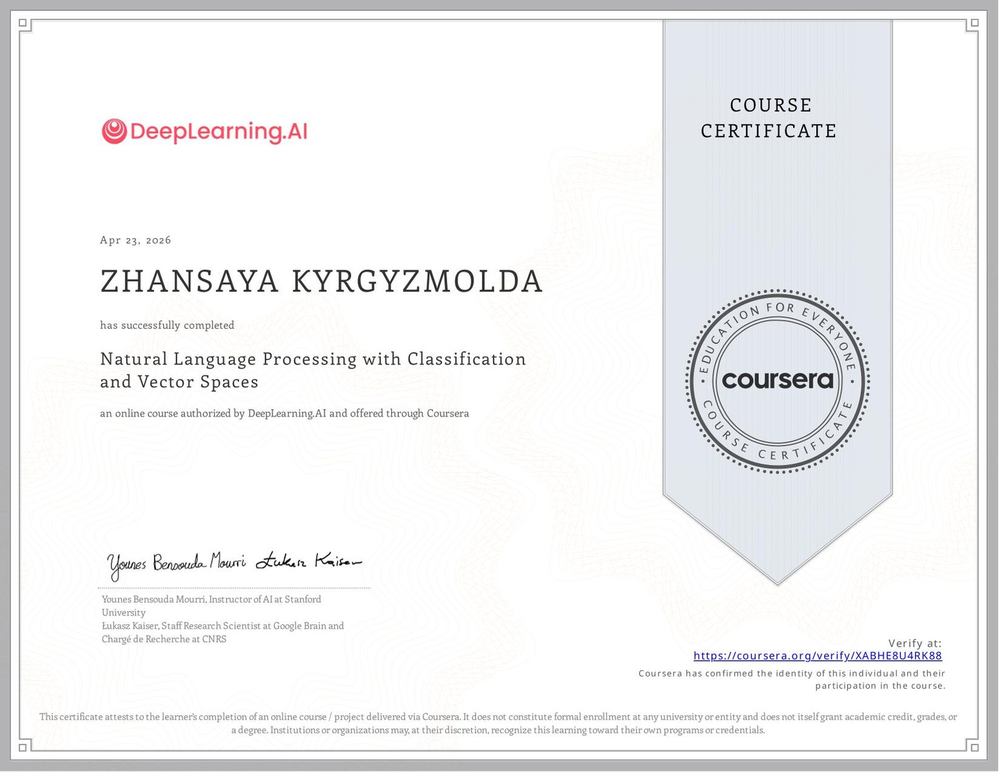

Natural Language Processing
LLM applications, retrieval, external memory, semantic evaluation, prompt behavior, and conversational system design.
PUSAN NATIONAL UNIVERSITY · ARTIFICIAL INTELLIGENCE
I’m Zhansaya Kyrgyzmolda, an Artificial Intelligence major at Pusan National University. I develop and document projects that combine software, machine learning, and hardware.
ABOUT
I use Python and related tools to build prototypes, test research questions, and document results. My work includes a language-model memory benchmark, a Raspberry Pi sign-language translator, an Arduino gesture glove, and an AI productivity web app.
I am currently studying Artificial Intelligence at Pusan National University in Busan. I am looking for junior, internship, research assistant, and remote roles where I can continue developing practical AI systems.
LLM applications, retrieval, external memory, semantic evaluation, prompt behavior, and conversational system design.
Real-time hand tracking, gesture classification, OpenCV pipelines, MediaPipe landmarks, and camera-based interfaces.
Raspberry Pi, Arduino, sensors, Bluetooth, local inference, and integration between model output and physical devices.
Accessibility research, wearable input, user interviews, and interface design.
SELECTED PROJECTS
I explain what I built, how I tested it, what worked, what did not work, and what I plan to improve.

I am testing how external memory influences a frozen language model, with the long-term goal of using memory in a humanoid agent.

I built a Raspberry Pi prototype that recognizes fingerspelled letters using MediaPipe landmarks and geometric rules.

I built an Arduino-based wearable prototype for cursor movement and air-drawing experiments using hand motion.

I developed a web-app prototype that combines an AI chatbot, task generation, a calendar, notifications, daily check-ins, and focus tools.
AWARDS & CERTIFICATES
These awards and certificates are connected to the projects shown on this site.

NATIONAL AWARD
Prototype category at the national KazRoboProject 2022 scientific and technical robotics competition. The award was for my Sign Language Translator project.
View the project →
Regional qualifying stage, SUMO category.

Completed June 2022.
View certificate ↗
Completed April 2026.
View certificate ↗PROJECT TIMELINE
I researched communication barriers, completed five interviews, built a Raspberry Pi sign-language translator, received regional and national robotics awards, and completed IBM computer vision coursework.
I worked on NLP, local language-model behavior, external-memory evaluation, a wearable input prototype, and the research architecture for Project RAY.
I plan to develop short-term and long-term memory, multimodal input, simulation, and the physical humanoid platform. The hardware is still in development.
CONTACT
I am interested in roles related to AI, NLP, computer vision, Python, robotics, and applied research.